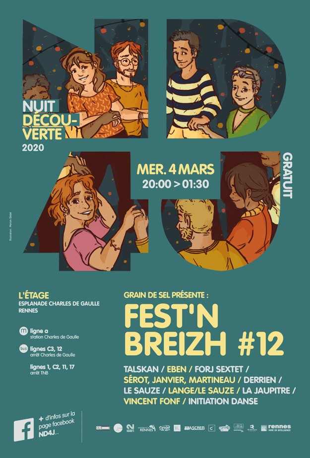

Edition 2020
Programmation
-
ASCREB (club danse bretonne) - initiation danse bretonne:
L'ASCREB est une association étudiante proposant différentes activités. Le club de danse bretonne de l'ASCREB s'occupe de l'initiation à la danse bretonne à Fest'n Breizh depuis le début. L'initiation a lieu en début de soirée.

-
Le Pont Supérieur:
Le Pont Supérieur accompagne les artistes du spectacle vivant vers les métiers d’interprètes et de pédagogues dans les disciplines de la danse et de la musique. Les éléves du pont supérieur passent leurs examens sur la scéne du Fest'n breizh.

-
Talskan
Quartet rennais de musique bretonne à danser.
-
Lange / Le Sauze (kan-ha-diskan)
Chant à danser du Centre-Bretagne et du Pays Vannetais
-
Forj Sextet
Création Evenement. association du groupe Trio forj et de plusieurs musicients
- Derrien / Le Sauze (biniou/bombarde)
-
Eben
Musique traditionnelle Bretonne
Les invitées
-
Vincent fonf:
Vincent Fonf, artiste plasticien réalise des performances peintures. A l’aide de sa palette de couleurs et de rythmes, il peint en tapant sur sa toile, avec un pinceau dans chaque main. Les musiciens, le public, le lieu deviennent sa partition.
-
La Jaupitre / le Cârouj:
Association dont le but est de collecter et diffuser la pratique des jeux bretons.